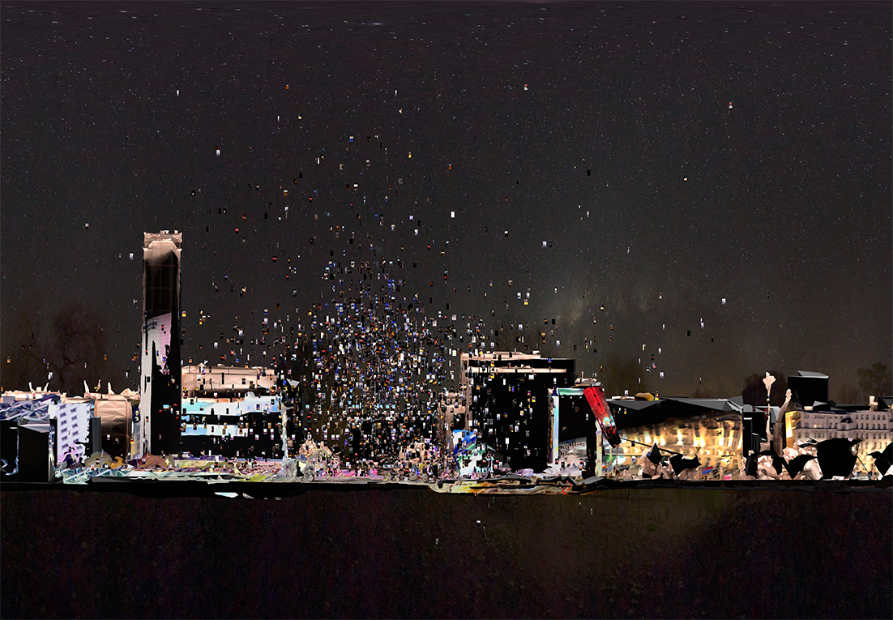
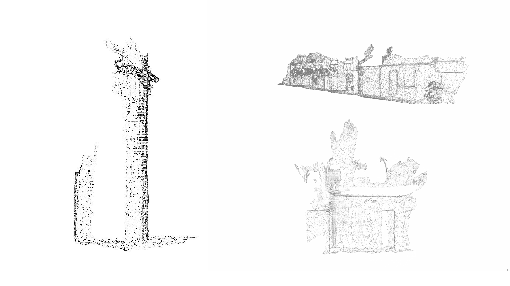
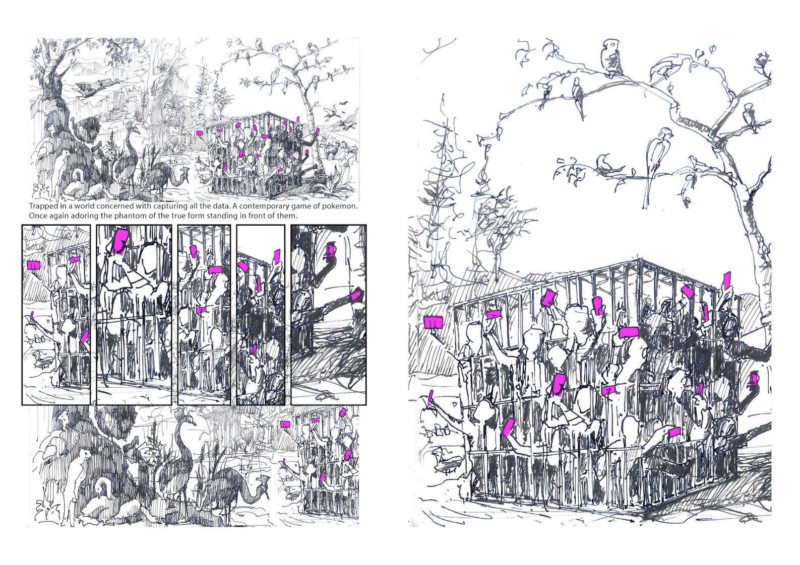

"The ongoing research project Citography explores the impact of technologies such as image sharing, social media, mobile devices, geolocation,
surveying, computer vision and data visualisation on our understanding, mapping and design of cities. It questions how these technologies impact
notions of place, location, commons and citizenship. This paper presents a first framework resulting from a case study looking into the relationships
between protests in physical public space of the city and within the public sphere of social media. It uses data scraping, modelling, data
visualisation and animation to construct a tempo-spatial model of the city. The case study explores public spaces vs public sphere and their vision
with different devices, emphasising collectively constructed surroundings by people who participate in the protest."

The project explores speculative landscape and emerging from it – architecture. Structure which is a result of a desire to a moment of catch
and search for a context of boundless nature. In this place it becomes difficult to define human scale and recognise the remains of architecture.
It emanates in duality. On one hand brings the landscape, new living areas on the edge of a dam and the connection between two different lands…
but on the other hand it is a separation, strong boundary, end of continuity. This contradiction explains the strong relation of a tower with time
and it occurs in the process of architecture formation. This is a place is waiting for new visitors to invite them to explore.
mapping cable infrastructure in Nevers
together with Supisara Burapachairsri and David Miller

Public life and technology
together with Tanya Mangion and Isinsu Tazici
